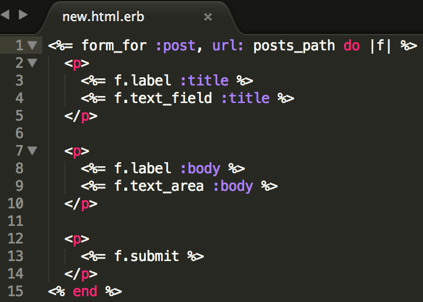

Add Posts Resources
rails new blog
cd blog
git init
git status
git add .
git commit -m "initial commit"
rails g controller posts
in config/routes.rb
resources :posts
root "posts#index"
add index route
add views/posts/index.html.erb
in posts_controller add new route
add view/posts/new.html.erb
add posts form
generate post model
rails g model Post title:string body:text
rake db:migrate
add create and params methods
create post show view
add show method to posts controller
create post index method
fix posts index view
Add A Sidebar
in the views/layouts/application.html.erb file
Add SASS
Add the extension .scss at the end of your assets/stylesheets/application.css file
Add normalize
create a new partial _normalize.css.scss and paste the normalize into it.
Import into your assets/stylesheets/application.css.scss by adding @import 'normalize'; at the end
Add SASS Styling
(not gonna get into that here)
Add Flash Message
Add a Wrapper Div
In the In the Under the line views/posts/new file add views/posts/show file add Add Validations to the Post Model
Add If Statement to the Post Controller for New Posts
Add Error Messages to New Post View
<%= form_for @post do |f| %> add: